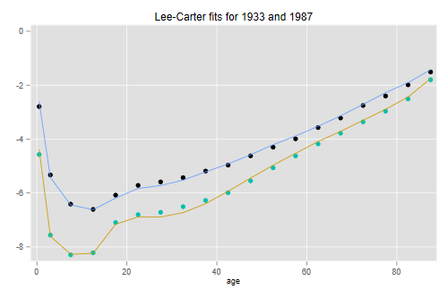
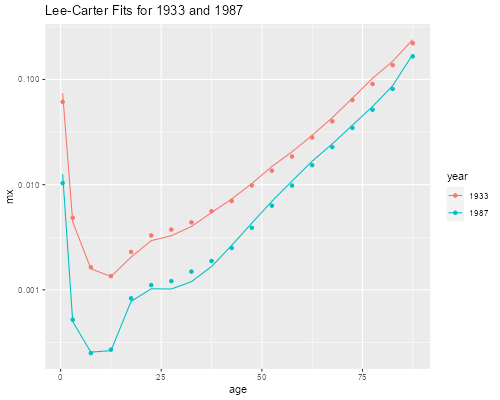
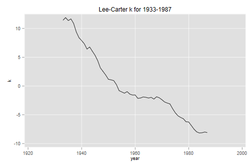
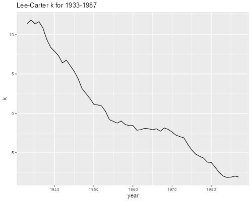
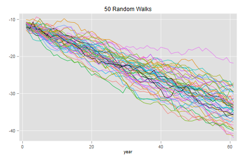
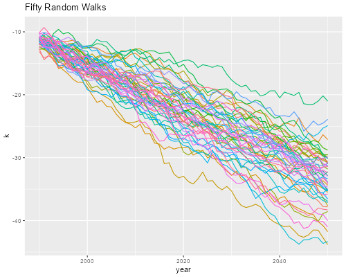
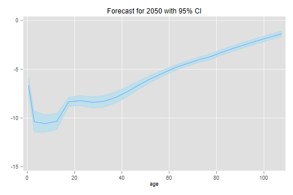
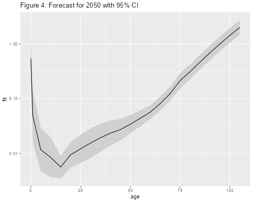
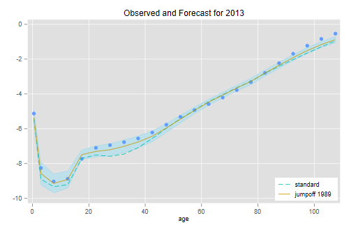
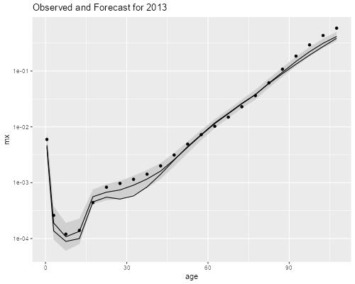

<h2 id="the-lee-carter-model">The Lee-Carter Model</h2>
<p>We apply the Lee-Carter approach to forecasting U.S. mortality, doing
all calculations from first principles. This log is best read in
conjunction with the class handout.</p>
<p>Lee and Carter use U.S. mortality rates for conventional 5-year age
groups up to 85+ by single calendar years from 1933 to 1987, for both
sexes.</p>
<p>The data can be obtained from <a
href="https://www.mortality.org">mortality.org</a>. Register for an
account, then select U.S.A., navigate to the row for life tables, total,
and the column for 5x1. Save the life table as a text file
<code>bltper_5x1.txt</code>. This update uses the version last modified
on 02 Jun 2022.</p>
<p>The code below shows the steps I followed after saving the web page
as <code>bltper_5x1.txt</code>. We need to code age from the group
labels and, more importantly, compute the rate for the open-ended age
group 85+. For fitting purposes we select ages up to 85 and the years up
to 1987, but later use more ages and years.</p>

{% include srtabs.html %}

<pre class='stata'>. import delimit using bltper_5x1.txt,  rowrange(3) varnames(3) ///
>   delimit(" ", collapse) clear
(encoding automatically selected: ISO-8859-1)
(11 vars, 2,112 obs)

. replace age = "110" if age == "110+"
(88 real changes made)

. gen pos = strpos(age, "-")

. replace age = substr(age, 1, pos - 1) if pos > 0
(1,936 real changes made)

. rename age age_s

. gen age = real(age_s)   

. save us1x5, replace // for later use
file us1x5.dta saved

. replace mx = lx/tx if age == 85
(88 real changes made)

. keep year age mx

. keep if age &lt;= 85 &amp; year &lt;= 1987
(1,067 observations deleted)
</pre>
<pre class='r'>> library(dplyr)
> library(stringr)
> library(tidyr)
> us &lt;- read.table("bltper_5x1.txt", skip = 2, header=TRUE)
> us &lt;- mutate(us, age0 = as.numeric(str_extract(us$Age, "[0-9]+")),
+   age = ifelse(age0 >= 5, age0 + 2.5, ifelse(age0 > 0, 3, 0.5)))
> us85 &lt;- mutate(us, mx = ifelse(Age == "85-89", lx/Tx, mx))
> usmx &lt;- select(us85, Year, age, mx) |> filter(age &lt; 90)
</pre>
<p>Next we compute the log of the rates. <span class="stata">The
calculations that follow are a bit simpler if we reshape the
data.</span> <span class="r">We will store them in a matrix of 55 years
by 19 age groups.</span></p>
<pre class='stata'>. gen logm = log(mx)

. drop mx

. quietly reshape wide logm, i(age) j(year)
</pre>
<pre class='r'>> rates &lt;- filter(usmx, Year &lt;= 1987)$mx
> M &lt;- matrix(log(rates), 55, 19, byrow = TRUE)
</pre>
<h3 id="fitting-the-model">Fitting the Model</h3>
<p>The first thing we need is the mean log-rate for each age group. This
is easily computed using <span class="stata">the <code>rowmeans</code>
function in <code>egen</code>.</span> <span
class="r"><code>colMeans()</code>.</span> The results are remarkably
close to Table 1 in the original paper.</p>
<pre class='stata'>. egen a = rowmean(logm1933 - logm1987)

. list age a

     ┌──────────────────┐
     │ age            a │
     ├──────────────────┤
  1. │   0   -3.6419408 │
  2. │   1   -6.6958293 │
  3. │   5   -7.5135297 │
  4. │  10   -7.5654938 │
  5. │  15   -6.7576327 │
     ├──────────────────┤
  6. │  20   -6.4478058 │
  7. │  25   -6.4054185 │
  8. │  30   -6.2271491 │
  9. │  35   -5.9070615 │
 10. │  40   -5.5138606 │
     ├──────────────────┤
 11. │  45   -5.0874851 │
 12. │  50    -4.652652 │
 13. │  55   -4.2607583 │
 14. │  60   -3.8570917 │
 15. │  65   -3.4747763 │
     ├──────────────────┤
 16. │  70   -3.0590744 │
 17. │  75   -2.6391786 │
 18. │  80   -2.2175468 │
 19. │  85   -1.6198283 │
     └──────────────────┘
</pre>
<pre class='r'>> a &lt;- colMeans(M)
> a
 [1] -3.641941 -6.695829 -7.513530 -7.565494 -6.757633 -6.447806 -6.405419
 [8] -6.227149 -5.907062 -5.513861 -5.087485 -4.652652 -4.260758 -3.857092
[15] -3.474776 -3.059074 -2.639179 -2.217547 -1.619828
</pre>
<p>The next step is to subtract the average age pattern
<strong>a</strong> from all years. <span class="stata">To do this we
copy the data into Mata</span></p>
<pre class='stata'>. mata: a = st_data(1::19, "a")

. mata: Y = st_data(1::19, 2..56)

. mata: Y = Y :- a
</pre>
<pre class='r'>> for(j in 1:19) M[,j] &lt;- M[,j] - a[j]
</pre>
<p>We are now ready to compute the Singular Value Decomposition (SVD),
which writes <strong>M</strong> = <strong>U D V</strong>, where
<strong>U</strong> and <strong>V’</strong> are orthogonal matrices and
<strong>D</strong> is a diagonal matrix of singular values. <span
class="stata">Before we call the function we need to define the output
matrices.</span> <span class="r">In fact we need just the first left and
right singular vectors.</span> The first column of <strong>U</strong>
times <strong>D</strong><sub>1,1</sub> times the first row of
<strong>V’</strong> has the best rank-1 approximation to the input
matrix.</p>
<pre class='stata'>. mata: U = d = Vt = J(0, 0, .)

. mata: svd(Y', U, d, Vt)
</pre>
<pre class='r'>> d &lt;- svd(M, 1, 1)
</pre>
<p>Lee and Carter normalize the first row of <strong>V</strong> so it
sums to one and call it <strong>b</strong>. This vector models how the
different age groups react to mortality change.</p>
<pre class='stata'>. mata: b = Vt[1,]/sum(Vt[1,])

. mata: b[1..5] // partial list ...
                 1             2             3             4             5
    ┌───────────────────────────────────────────────────────────────────────┐
  1 │  .0911639354   .1121398614     .09379187   .0832670274   .0498104034  │
    └───────────────────────────────────────────────────────────────────────┘
</pre>
<pre class='r'>> b &lt;- d$v/sum(d$v)
> head(b, 5) 
           [,1]
[1,] 0.09116394
[2,] 0.11213986
[3,] 0.09379187
[4,] 0.08326703
[5,] 0.04981040
</pre>
<p>These values are remarkably close to the <em>b</em>’s published in
Table 2. Lee and Carter also take the first column of
<strong>U</strong>, multiply by <strong>D</strong><sub>1,1</sub> and
multiply by the sum of the first row of <strong>V’</strong> (to cancel
the division) and call that <strong>k</strong>. This vector captures
overall mortality change over time.</p>
<pre class='stata'>. mata: k = U[,1] * sum(Vt[1,]) * d[1]

. mata: k[1..5]' // partial list...
                 1             2             3             4             5
    ┌───────────────────────────────────────────────────────────────────────┐
  1 │  11.39151719   11.86102892   11.35305831   11.64034529   10.85845282  │
    └───────────────────────────────────────────────────────────────────────┘
</pre>
<pre class='r'>> k &lt;- d$u * sum(d$v) * d$d[1]
> head(k, 5)
         [,1]
[1,] 11.39152
[2,] 11.86103
[3,] 11.35306
[4,] 11.64035
[5,] 10.85845
</pre>
<h3 id="plotting-parameters-and-fits">Plotting Parameters and Fits</h3>
<p>The next task is to compute the Lee-Carter fits to the mortality
rates in 1933 and 1987, reproducing part of Figure 2 in the original
paper. <span class="stata">We are done with Mata, so we copy
<strong>b</strong> and <strong>k</strong> into Stata.</span></p>
<pre class='stata'>. mata: st_store(1::19, st_addvar("float","b"), b')

. set obs 55 
Number of observations (_N) was 19, now 55.

. mata: st_store(., st_addvar("float","k"), k)

. gen fit1933 = a + b * k[1]
(36 missing values generated)

. gen fit1987 = a + b * k[1987-1932]
(36 missing values generated)

. gen agem = age + 2.5
(36 missing values generated)

. replace agem = 0.5 in 1
(1 real change made)

. replace agem = 3   in 2
(1 real change made)

. twoway (scatter logm1933 agem) (line fit1933 agem) ///
>   (scatter logm1987 agem) (line fit1987 agem) ///
>  , title(Lee-Carter fits for 1933 and 1987) xt(age) legend(off)

. graph export lcfig1.png, width(500) replace
file lcfig1.png saved as PNG format
</pre>
<p></p>
<pre class='r'>> library(ggplot2)
> usmx2 &lt;- filter(usmx, Year==1933 | Year == 1987) |> 
+   mutate(year = factor(Year),
+     fit = c(exp(a + b * k[1]), exp(a + b * k[55])))
> ggplot(usmx2, aes(age, mx, color=year)) + geom_point() + 
+   geom_line(aes(age,fit,color=year)) + scale_y_log10() +
+   ggtitle("Lee-Carter Fits for 1933 and 1987")
> ggsave("lcfig1r.png", width = 500/72, height = 400/72, dpi = 72)
</pre>
<p></p>
<p>Here’s the trajectory of <em>k</em></p>
<pre class='stata'>. gen t = 1932 + _n 

. line k t, title("Lee-Carter k for 1933-1987") xt(year)

. graph export lcfig2.png, width(500) replace
file lcfig2.png saved as PNG format
</pre>
<p></p>
<pre class='r'>> trend &lt;- data.frame(year = 1933:1987, k = k)
> ggplot(trend, aes(year, k)) + geom_line() +
+   ggtitle("Lee-Carter k for 1933-1987")
> ggsave("lcfig2r.png", width = 500/72, height = 400/72, dpi = 72)  
</pre>
<p></p>
<h3 id="a-random-walk">A Random Walk</h3>
<p>We now simulate the stochastic process driving <strong>k</strong>, a
random walk with drift <em>-0.365</em> and innovations with standard
deviation <em>0.652</em>. The idea is to generate normally distributed
errors, add the drift, and them add to each value the previous one,
which is easiest done as a running sum. We do this 50 times. <span
class="stata">For clarity I use a temporary variable called
<code>e</code> for the errors</span></p>
<pre class='stata'>. set obs 61
Number of observations (_N) was 55, now 61.

. gen n = _n

. gen e = .
(61 missing values generated)

. forvalues r = 1/50 {
  2.   quietly replace e = rnormal() * 0.652 
  3.   quietly gen     k`r' = -11.05     - 0.365 + e in 1
  4.   quietly replace k`r' = k`r'[_n-1] - 0.365 + e in 2/L
  5. }

. twoway (line k1-k50 n), legend(off) xt(year) title(50 Random Walks)

. graph export lcfig3.png, width(500) replace
file lcfig3.png saved as PNG format
</pre>
<p></p>
<pre class='r'>> S &lt;- matrix(0,61,50)
> for(j in 1:50) S[,j] &lt;- -11.05 + cumsum(-0.365 + rnorm(61, 0, 0.652))
> df &lt;- data.frame(S); df$year &lt;- 1990:2050
> ggplot(gather(df, sim, k, -year), aes(year, k, color = sim)) +
+   geom_line() + guides(color = "none") + 
+   ggtitle("Fifty Random Walks")
> ggsave("lcfig3r.png", width = 500/72, height = 400/72, dpi = 72)
</pre>
<p></p>
<p>This being a simulation your results will differ from mine. You
should note that there is considerable uncertainty about the level of
mortality 50 years into the future.</p>
<h3 id="age-specific-forecasts.">Age-Specific Forecasts.</h3>
<p>Let us forecast age-specific mortality in 2050 starting from 1989. To
this end we will use the official values of <strong>a</strong> and
<strong>b</strong>, which I saved in a text file called
<code>leecarter.dat</code> (also a Stata file
<code>leecarter.dta</code>) in the datasets section. These values extend
the two sets of parameters to age 105+, but are otherwise practically
identical to the estimates we just obtained.</p>
<p>Next we compute <em>k</em> starting from -11.05 in 1989. <span
class="stata">I call the resulting scalar <code>km</code> to avoid
conflict with the variable <code>k</code>.</span> We also compute the
standard deviation and a 95% confidence interval. <span class="stata">At
this point we restore the original data to get all ages</span></p>
<pre class='stata'>. use us1x5, clear

. keep if age &lt; 110
(88 observations deleted)

. gen logm = log(mx)

. keep age year logm

. merge m:1 age using https://grodri.github.io/datasets/leecarter

    Result                      Number of obs
    ─────────────────────────────────────────
    Not matched                             0
    Matched                             2,024  (_merge==3)
    ─────────────────────────────────────────

. gen agem = age + 2.5

. quietly replace agem = 0.5 if age == 0

. quietly replace agem = 3 if age == 1

. scalar km  = -11.05 - 0.365*(2050 - 1989)

. scalar sd = sqrt(2050 - 1989)*0.652

. di km - 1.96*sd, km + 1.96*sd
-43.295874 -23.334126

. gen p2050  = lc_a + lc_b *  km

. gen lb2050 = lc_a + lc_b * (km - 1.96*sd)

. gen ub2050 = lc_a + lc_b * (km + 1.96*sd)

. twoway (rarea ub2050 lb2050 agem, color(ltblue)) (line p2050 agem) ///
>   , legend(off) title(Forecast for 2050 with 95% CI) xt(age)

. graph export lcfig4.png, width(500) replace
file lcfig4.png saved as PNG format
</pre>
<p></p>
<pre class='r'>> lc &lt;- read.table("leecarter.dat", header = TRUE)
> k2050 &lt;- 33.3
> z &lt;- qnorm(0.975)
> se &lt;- sqrt(2050 - 1989) * 0.652
> k2050 + c(-1, 1) * z * se
[1] 23.31931 43.28069
> forecast &lt;- data.frame(age = lc$age,
+   fit = exp(lc$a + lc$b * k2050),
+   low = exp(lc$a + lc$b * (k2050 - z * se)),
+   hi  = exp(lc$a + lc$b * (k2050 + z * se)))
> ggplot(forecast, aes(age, fit)) + scale_y_log10() +
+   geom_ribbon(aes(ymin = low, ymax = hi), fill="#d0d0d0") +
+   geom_line() + ggtitle("Figure 4: Forecast for 2050 with 95% CI")
> ggsave("lcfig4r.png", width = 500/72, height = 400/72, dpi = 72)
</pre>
<p></p>
<p>So we are 95% confident that <em>k</em> will be between -43.3 and
-23.3 in 2050. Finally we combine <em>k</em> and the <strong>a</strong>
and <strong>b</strong> schedules to forecast and plot age-specific
mortality (in the log scale).</p>
<h3 id="corrected-jump-off">Corrected Jump-off</h3>
<p>The final issue concerns the choice of jump-off. Below we will make a
“forecast” for 2013, the latest year for which we have data. The
prediction is not too good for young adults because of a slight lack of
fit in 1989 which propagates in the forecast. The solution is to
“jump-off” from the actual 1989 rates.</p>
<pre class='stata'>. keep if year == 1989 | year == 2013
(1,978 observations deleted)

. drop _merge

. reshape wide logm, i(age lc_a lc_b) j(year)     
(j = 1989 2013)

Data                               Long   ->   Wide
─────────────────────────────────────────────────────────────────────────────
Number of observations               46   ->   23          
Number of variables                   9   ->   9           
j variable (2 values)              year   ->   (dropped)
xij variables:
                                   logm   ->   logm1989 logm2013
─────────────────────────────────────────────────────────────────────────────

. scalar drift = -0.365 * (2013 - 1989)

. scalar se    =  0.625 * sqrt(2013 - 1989)

. scalar z  = invnormal(0.975)

. gen p2013  =     lc_a + lc_b * (-11.05 + drift)

. gen j2013  = logm1989 + lc_b * (         drift)

. gen ub2013 = logm1989 + lc_b * (         drift - z * se)

. gen lb2013 = logm1989 + lc_b * (         drift + z * se)

. twoway (rarea ub2013 lb2013 agem, color(ltblue)) ///
>   (scatter logm2013 agem if age &lt; 110) ///
>   (line p2013 agem, lpat(dash)) (line j2013 agem if age &lt; 110) ///
> , title(Observed and Forecast for 2013) xt(age) ///
>   legend(order(3 "standard" 4 "jumpoff 1989") ring(0) pos(5) cols(1))   

. graph export lcfig5.png, width(500) replace
file lcfig5.png saved as PNG format
</pre>
<p></p>
<pre class='r'>> later &lt;- select(us, age, Year, mx) |> filter(Year == 1989 | Year == 2013)
> a89 &lt;- log(filter(later, Year == 1989, age &lt; 110)$mx)
> k89 &lt;-  -(2013 - 1989) * 0.365
> se &lt;- sqrt(2013 - 1989) * 0.652
> y2013 &lt;- filter(later, Year == 2013, age &lt; 110) |>
+   mutate(standard = exp(lc$a - lc$b * 19.81),
+     jumpof   = exp(a89  + lc$b * k89),
+     low      = exp(a89  + lc$b * (k89 - z * se)),
+     hi       = exp(a89  + lc$b * (k89 + z * se)))
> ggplot(y2013, aes(age, mx)) + scale_y_log10() +
+   geom_ribbon(aes(ymin = low, ymax = hi), fill = "#d0d0d0") +
+   geom_point() + geom_line(aes(age, standard)) + geom_line(aes(age, jumpof)) +
+   ggtitle("Observed and Forecast for 2013")
> ggsave("lcfig5r.png", width = 500/72, height = 400/72, dpi = 72)
</pre>
<p></p>
<p>The performance of the model with the correct jump-off for a 24-year
forecast is nothing short of remarkable.</p>
<p><strong>Update</strong>. Now that we have more data we can test the
model further. Turns out the model doesn’t do so well for later years,
because there was an unexpected rise in adult mortality during the
working ages starting around 2010, not to mention the pandemic and the
subsequent increase in mortality in 2020. You may wish to explore these
issues using the available data.</p>
<h3 id="reference">Reference</h3>
<p>HMD. Human Mortality Database. Max Planck Institute for Demographic
Research (Germany), University of California, Berkeley (USA), and French
Institute for Demographic Studies (France). Available at <a
href="https://www.mortality.org"
class="uri">https://www.mortality.org</a>.</p>
